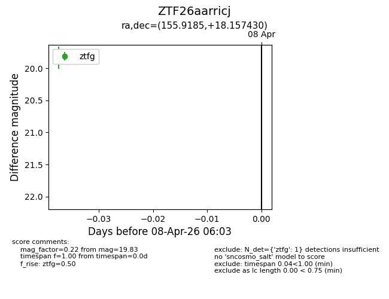
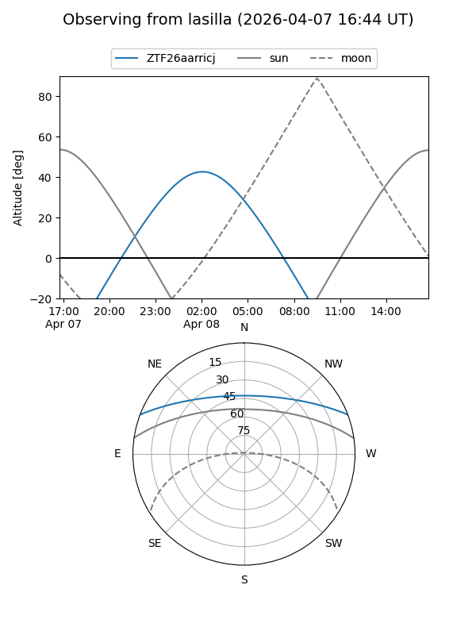
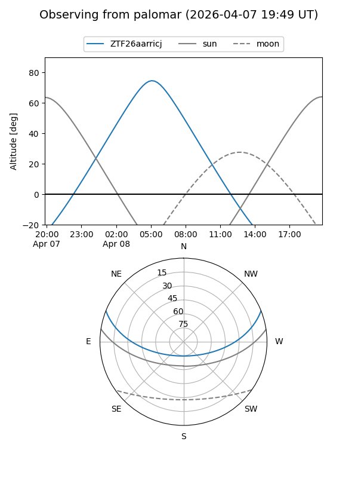

ZTF26aarricj
Target ZTF26aarricj at 2026-04-08 06:08
Aliases and brokers:
FINK: link
Lasair: link
ALeRCE: link
alt names
ZTF26aarricj (ztf,fink_ztf)
Coordinates:
equatorial (ra, dec) = 155.9185,+18.15743
equatorial (HMS+DMS) = 10:23:40.44,+18:09:26.75
galactic (l, b) = (219.8168,+54.88548)
Flags:
Photometry:
last ztfg=19.83
1 ztfg detections
Lightcurve

Visibility


Additional plots